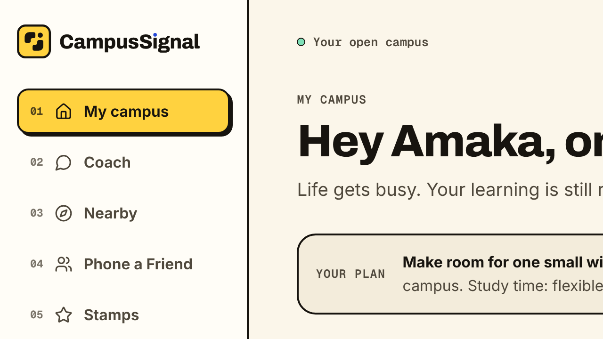
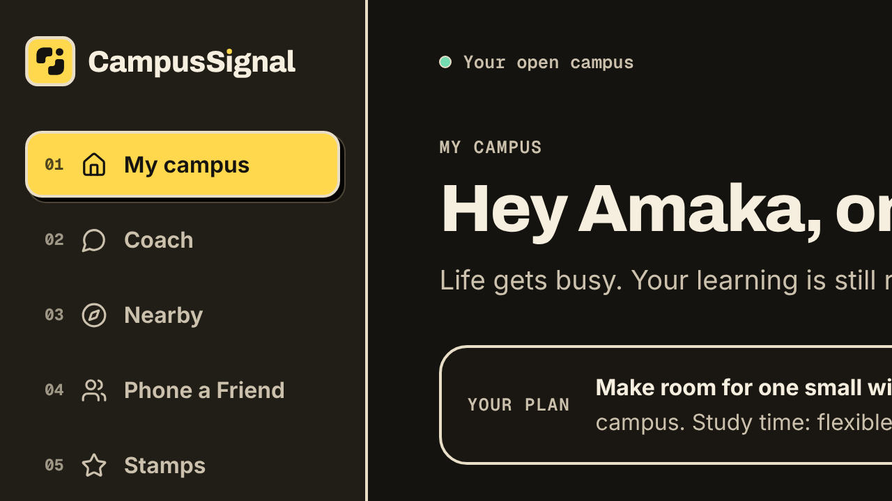
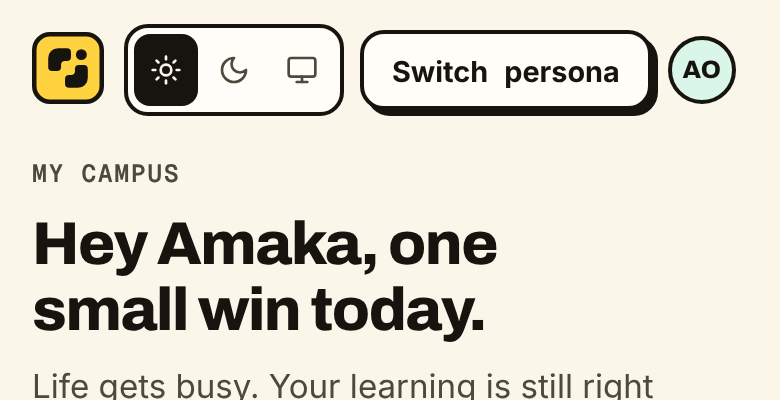
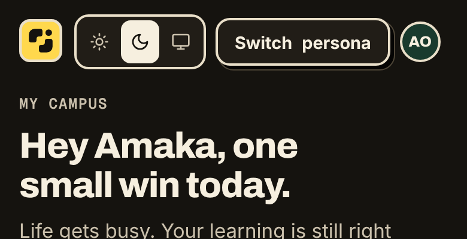
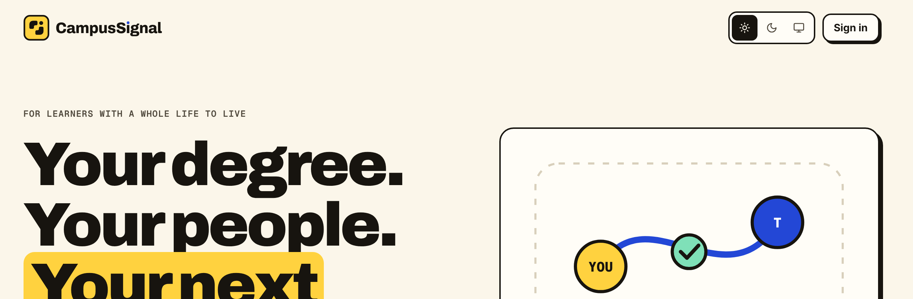
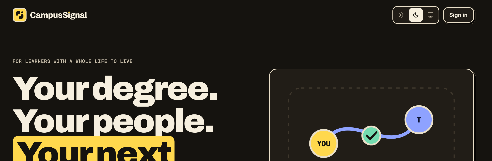
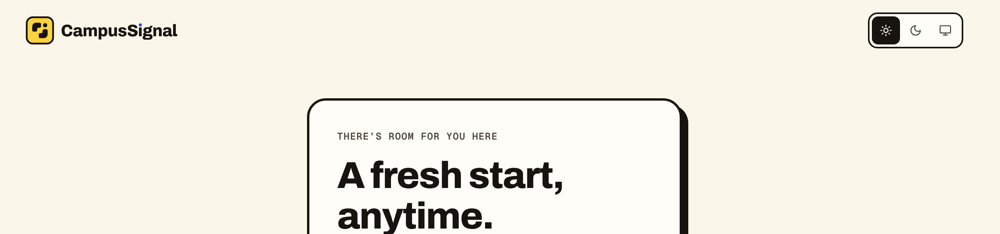
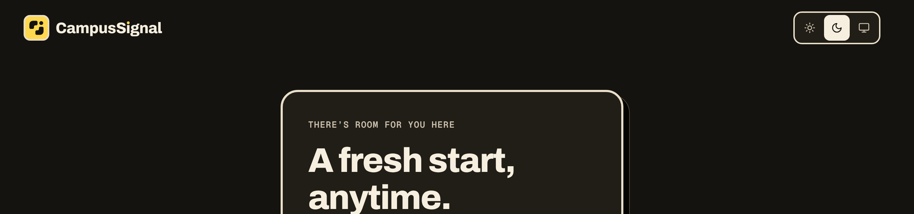

The Opening
Two learners, drawn as rounded L-blocks, leave a stepped channel between them. The opening runs up and to the right, where a signal dot marks the next step. The wordmark carries the same dot over its i and a short forward step on its final l. See the three concepts and docs/BRAND.md for usage rules.
In the actual navigation
Captured from a production build of the app at 2× in both themes. Below 420px the header switches to the compact tile.








Approved lockups
Favicon and app icons at real pixel sizes
Below 32px the favicon uses a simplified, pixel-snapped mark on a 16-unit grid rather than shrinking the lockup. The magnified PNGs show the actual exported pixels.
Alongside the product components
A 12-minute restart. One real step.
The logo shares the tile radius, 2–3px outlines and solid offsets of the app's cards and buttons.
Your next small win.
Clear space and minimum size
Below 24px, use the compact tile or favicon rather than the full lockup.
Incorrect usage
Don't rotate or tilt the logo.
Don't stretch or squash it. Keep the aspect ratio.
Don't recolour the tile outside the palette.
Don't add blurred shadows, gradients or glows.
Don't place a low-contrast mark on yellow. Use the ink mark at full opacity.
Don't retype the name in a font. Use the supplied wordmark artwork.
Colour
#ffd23f · dark #ffd84d#17140f#fbf6ea · cream #f6efdf#2347d6 · dark uses yellow